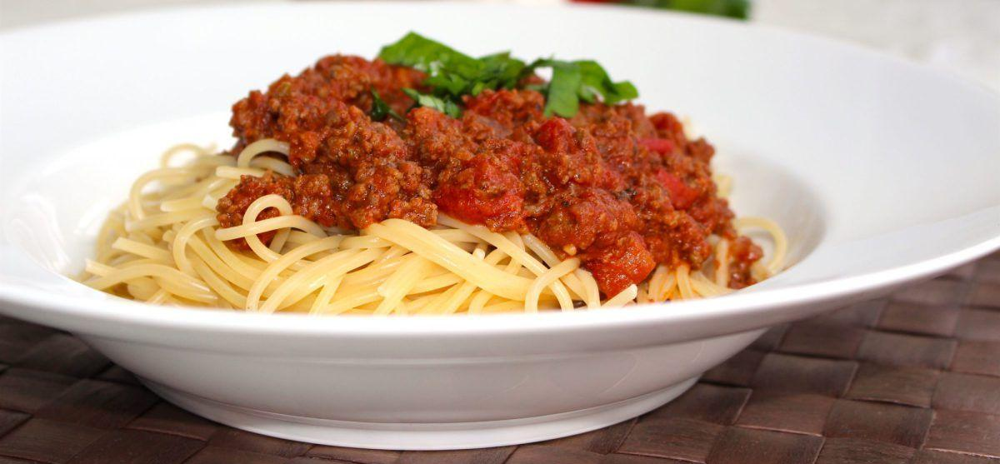
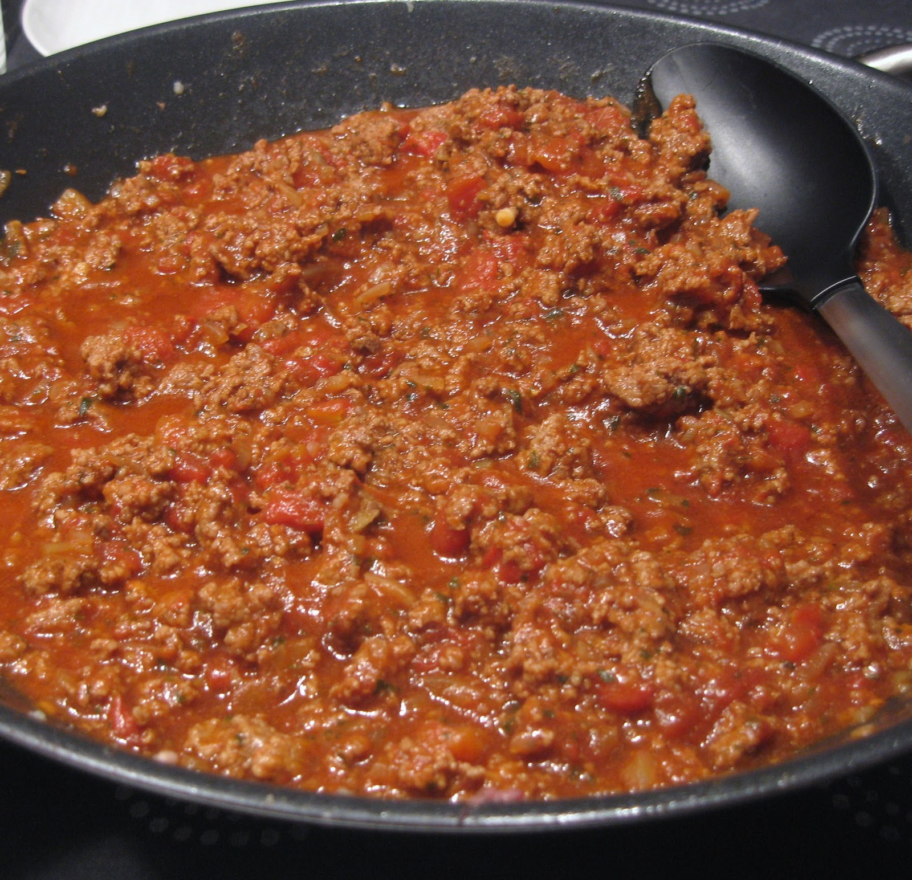

Spaghetti och köttfärssås
Ingredienser för 4 personer
- 400 g nötfärs
- 1 gul lök
- 1 morot
- 1 selleristjälk
- 2 klyftor vitlök
- 0,5 dl olivolja
- 3 msk tomatpuré
- 1 dl rött vin (eller vatten)
- 400 g krossade tomater
- 1 tsk torkad oregano
- 0,5 tsk torkad timjan
- 1 lagerblad
- peppar, nymalen
- kokt pasta, till servering
Tillagning
-
Finhacka lök, morot och selleri så fint du kan. Fräs mjukt utan att
det tar färg i olivoljan.
-
Tryck till vitlöksklyftorna med knivbladets sida och finhacka. Låt
fräsa med de andra grönsakerna i någon minut.
-
Tillsätt köttfärs, lite i taget så att det bryns och inte kokar.
Tillsätt tomatpurén och låt fräsa med någon minut.
- Tillsätt vin eller vatten och låt få ett snabbt uppkok.
-
I med tomatkross, oregano, timjan, lagerblad i pannan. Salta och
peppra. Låt puttra under lock i minst 20 minuter, gärna mer om du
har tid.
- Koka spaghetti enligt instruktioner på förpackningen
